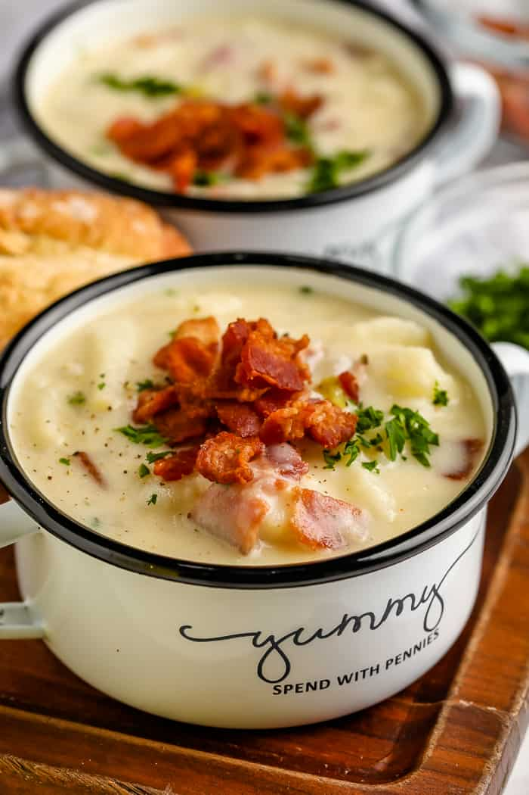

Potato Soup

Description
This creamy potato soup will have you warmed up and stuffed for the winter. As soon as the weather drops below 40 degrees, you can bet my home is filled with the aroma of garlic and bacon that you'll find in this dish.
Estimated Cooking Time: 30 minutes
Ingredients
- Yukon Gold potatos (4 cups)
- Onion
- Chicken broth (16 oz)
- Garlic (4 cloves)
- Bacon strips (2 slices)
- Milk (1 cup)
- Sour cream (2 tblsp)
- Heavy whipping cream (1/4 cup)
- Shredded cheddar cheese (1/2 to 1 cup)
- Salt, pepper, and paprika to taste